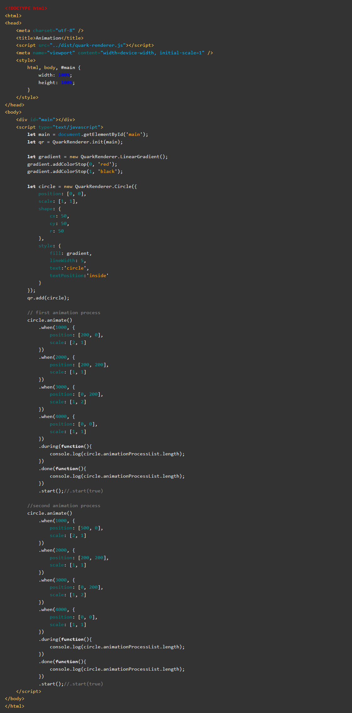
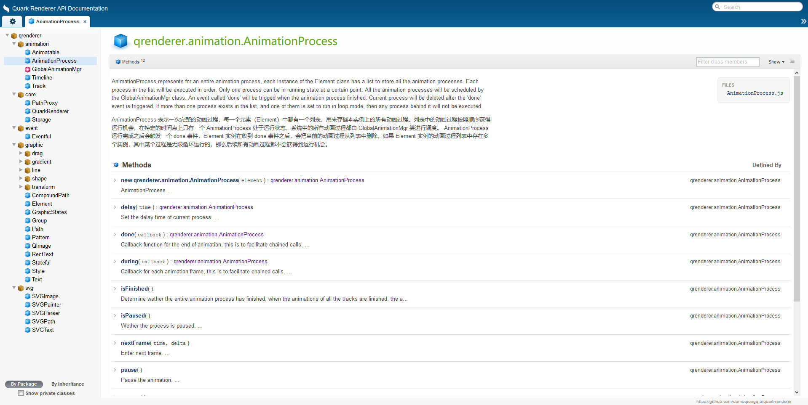

支持多种运行时环境

浏览器环境
QuarkRenderer 可以在所有主流浏览器环境中运行，兼容性非常棒。

Node 环境
QuarkRenderer 可以在 node-canvas 环境中运行。

微信小程序
QuarkRenderer 在微信小程序中的表现也相当出色，无需 Hack ，直接支持。
极高的性能


强大的补间算法
Quark Renderer 强大的补间算法不仅仅可以对位置、尺寸进行补间，对颜色、字符串也可以进行补间，这是同类技术中比较特殊的。
简单而统一的接口
Quark Renderer 的接口简单而统一，所有图元的配置项都是完全一致的。只要熟悉其中一个，就熟悉了所有，学习成本非常低。
一流的文档
经过持续不断的优化，Quark Renderer 拥有一流的文档，所有注释和文档都内置中文、英文两个版本。
快速上手
# 克隆此项目
$ git clone https://gitee.com/quark-renderer/quark-renderer.git
# 进入仓库
$ cd quark-renderer
# 查看实例
$ 所有实例都位于 /test 目录下，在浏览器中直接打开 html 即可运行。
# 安装依赖
$ npm i (中文开发者可以使用 cnpm )
# 构建
$ npm run build
# 开发
$ npm run dev